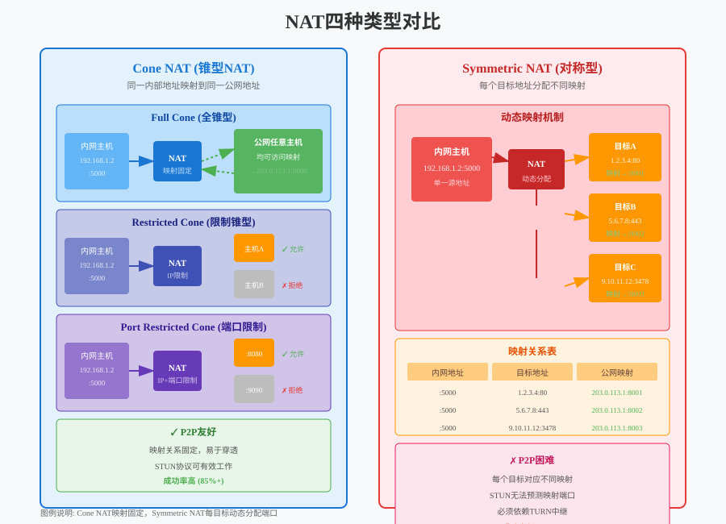
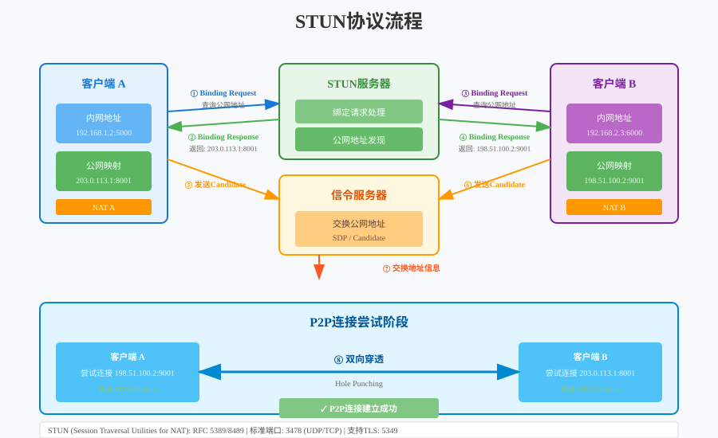
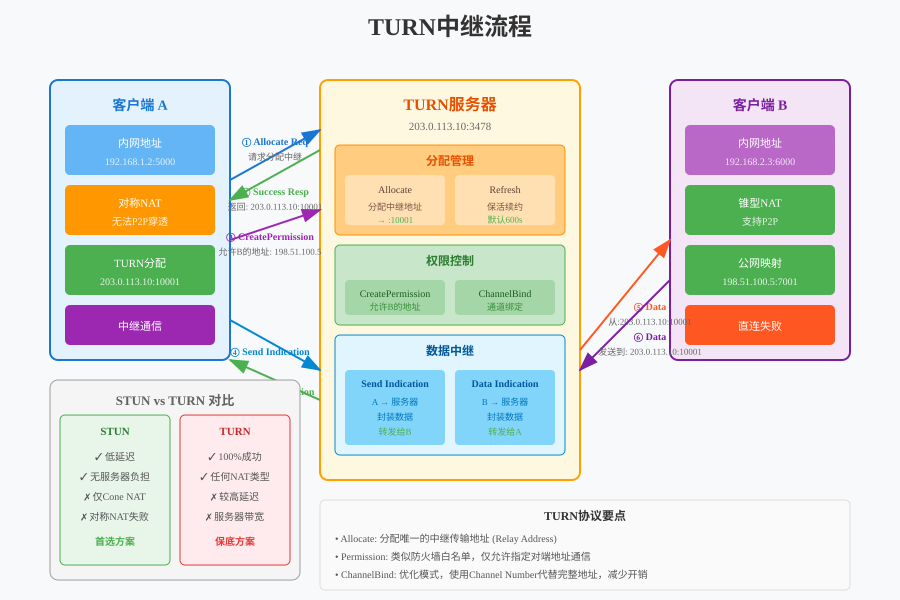
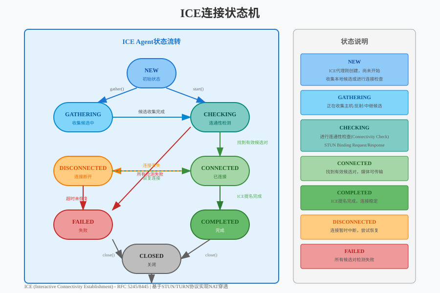
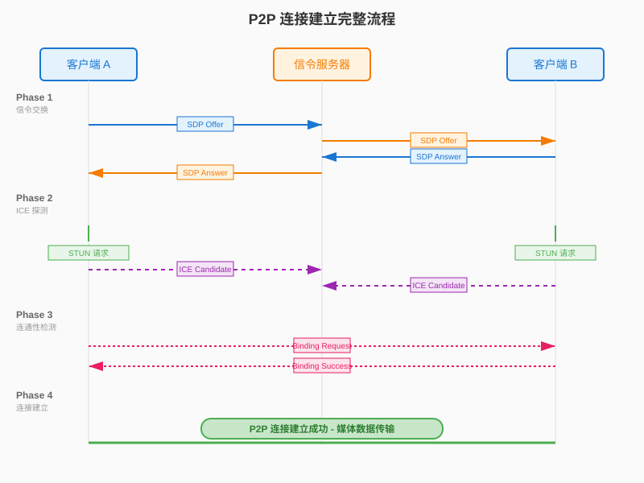

音视频开发实战
第19章：NAT 穿透与 P2P 连接
本章目标：理解网络地址转换（NAT）的原理，掌握 STUN/TURN/ICE 协议，实现低延迟的 P2P 连接。
在第18章中，我们掌握了 UDP 编程基础，理解了 RTP/RTCP 协议，并实现了 JitterBuffer 来平滑网络抖动。UDP 是实时通信的基石，但仅有 UDP 还不够——在复杂的网络环境下，大多数设备没有公网 IP 地址，无法直接建立 P2P 连接。
本章将介绍 WebRTC 技术栈的核心基础 —— 如何在复杂的网络环境下建立点对点（P2P）连接，实现小于 500ms 的超低延迟通信。这是实时连麦、视频会议等互动场景的技术关键。
本章将介绍 WebRTC 技术栈的核心基础 —— 如何在复杂的网络环境下建立点对点（P2P）连接，实现小于 500ms 的超低延迟通信。
学习本章后，你将能够： - 理解 NAT 的工作原理和四种类型 - 使用 STUN 协议发现公网地址 - 使用 TURN 协议实现中继转发 - 掌握 ICE 框架的候选地址收集和连通性检测 - 设计完整的 P2P 连接建立流程
目录
1. 为什么需要 NAT 穿透？
1.1 直播延迟问题的根源
在传统 CDN 直播架构中，延迟主要来源于：
| 环节 | 延迟来源 | 时间消耗 |
|---|---|---|
| 采集编码 | H.264 编码缓冲、B帧延迟 | 100-300ms |
| 推流缓冲 | 累积一定数据后批量发送 | 200-500ms |
| CDN 分发 | 边缘节点缓存、GOP对齐 | 500-2000ms |
| 播放缓冲 | 播放器为防卡顿预留缓冲 | 500-3000ms |
| 总计 | - | 1.3-6 秒 |
1.2 P2P 连接的优势
点对点（P2P）连接 让两个客户端直接通信，绕过中间服务器：
传统架构: A ──→ CDN服务器 ──→ B (延迟: 1-3秒)
P2P架构: A ←────────────→ B (延迟: <500ms)延迟对比：
| 协议 | 典型延迟 | 适用场景 |
|---|---|---|
| RTMP | 1-3 秒 | 大规模直播、录播 |
| HLS/DASH | 5-30 秒 | 网页播放、兼容性优先 |
| WebRTC (P2P) | < 500ms | 实时互动、连麦 |
1.3 P2P 的挑战
然而，P2P 连接面临一个核心问题：大多数设备没有公网 IP 地址。
问题: 客户端A如何找到客户端B？
客户端A (192.168.1.10) 客户端B (10.0.0.5)
↓ ↓
NAT路由器 NAT路由器
↓ ↓
公网? (203.0.113.5) 公网? (198.51.100.8)
↓ ↓
? ? ? 如何直接连接 ? ? ?这就是 NAT 穿透（NAT Traversal） 要解决的问题。
2. NAT 是什么？
2.1 私有 IP 与公网 IP
IPv4 地址枯竭：全球约 40 亿个 IPv4 地址，远不足以给每台设备分配独立公网 IP。
解决方案： - 公网
IP：全球唯一，可直接访问（如 203.0.113.5） -
私有 IP：局域网内使用，不可直接访问（如
192.168.x.x、10.x.x.x）
私有地址范围（RFC 1918）： | 类型 | 地址范围 | 常见场景 | |:—|:—|:—| | Class A | 10.0.0.0 ~ 10.255.255.255 | 大型企业 | | Class B | 172.16.0.0 ~ 172.31.255.255 | 中型网络 | | Class C | 192.168.0.0 ~ 192.168.255.255 | 家庭路由器 |
2.2 NAT 的工作原理
网络地址转换（NAT） 让多个内网设备共享一个公网 IP：
内网 NAT路由器 公网
┌─────────────┐ ┌─────────────┐ ┌─────────────┐
│ 设备A │ │ │ │ 服务器S │
│192.168.1.10:5000│───→│ 端口映射表 │──→公网通信→│203.0.113.1:80│
└─────────────┘ │ │ └─────────────┘
│ A:5000 ↔ 1.2.3.4:6000 │
┌─────────────┐ │ │ ┌─────────────┐
│ 设备B │ │ │ │ 服务器T │
│192.168.1.11:5000│───→│ B:5000 ↔ 1.2.3.4:6001 │──→│198.51.100.5 │
└─────────────┘ └─────────────┘ └─────────────┘
↑
公网IP: 1.2.3.4NAT 映射表 是核心： | 内网地址 | 公网地址 | 目标 | |:—|:—|:—| | 192.168.1.10:5000 | 1.2.3.4:6000 | 服务器S | | 192.168.1.11:5000 | 1.2.3.4:6001 | 服务器T |
2.3 四种 NAT 类型
NAT 的行为决定了 P2P 穿透的难度：

Full Cone（完全锥形）
特点：一旦内网地址被映射到公网地址，任何外部主机都可以通过该公网地址访问内网设备。
内网 A:192.168.1.10:5000
↓ 访问任何外部服务器
NAT 建立映射: 1.2.3.4:6000
↓
任意主机 ──→ 1.2.3.4:6000 都可以到达 A穿透难度：极易 ✓✓✓
Restricted Cone（地址限制锥形）
特点：只有 A 先发过包的目标地址 才能访问 A 的映射端口。
内网 A 先发包给服务器S
↓
NAT 建立映射: 1.2.3.4:6000 → S
↓
只有 S 的 IP 能访问 1.2.3.4:6000
其他主机 X 即使知道端口也无法访问穿透难度：容易 ✓✓
Port Restricted Cone（端口限制锥形）
特点：更严格的限制，需要 A 先发过包的特定 IP:端口 才能访问。
内网 A 先发包给 S:80
↓
NAT 建立映射: 1.2.3.4:6000 → S:80
↓
只有 S:80 能访问 1.2.3.4:6000
S:443 或其他端口都无法访问穿透难度：中等 ⚠
Symmetric（对称型）
特点：每个不同的目标地址都会分配不同的公网端口。
A → S:80 NAT分配: 1.2.3.4:6000
A → T:80 NAT分配: 1.2.3.4:6001 (不同端口!)
问题: B 知道 A→S 用的是 6000 端口
但 B 无法用这个端口连接 A
(因为 B 不是 S)穿透难度：无法穿透 ✗
企业级防火墙、移动网络（3G/4G/5G） 通常使用 Symmetric NAT，此时必须使用 TURN 中继。
3. STUN 协议
3.1 STUN 是什么？
Session Traversal Utilities for NAT（STUN） 是一个简单的协议，让客户端能够发现自己的公网地址。
核心问题：客户端知道自己的私网地址（192.168.1.10:5000），但不知道
NAT 给它分配的公网地址是什么。
STUN 解决方案： 1. 客户端向 STUN 服务器发送请求 2. STUN 服务器从公网角度看到源地址 3. 服务器将该地址返回给客户端
3.2 STUN 工作流程

协议细节：
┌─────────────────────────────────────────────────────────────┐
│ STUN Message Header (20 bytes) │
├─────────────────────────────────────────────────────────────┤
│ 0 1 2 3 │
│ 0 1 2 3 4 5 6 7 8 9 0 1 2 3 4 5 6 7 8 9 0 1 2 3 4 5 6 7 8 9 │
├─────────────────────────────────────────────────────────────┤
│ | Message Type | Message Length (payload) │
│ | (2 bytes) | (2 bytes) │
├─────────────────────────────────────────────────────────────┤
│ | Magic Cookie (0x2112A442) │
│ | (4 bytes) │
├─────────────────────────────────────────────────────────────┤
│ | Transaction ID (12 bytes) │
│ | (匹配 Request-Response) │
└─────────────────────────────────────────────────────────────┘3.3 Binding Request/Response
Binding Request（客户端发送）：
STUN Message Type: 0x0001 (Binding Request)
Attributes: (可选) USERNAME, MESSAGE-INTEGRITYBinding Response（服务器返回）：
STUN Message Type: 0x0101 (Binding Response)
Attributes:
- XOR-MAPPED-ADDRESS: 经过XOR混淆的公网地址
- MAPPED-ADDRESS: (已弃用) 明文公网地址
- SOURCE-ADDRESS: STUN服务器发送地址3.4 XOR-MAPPED-ADDRESS
为什么需要 XOR？
防止中间网络设备篡改地址。某些 NAT 会检查并修改 STUN 响应中的 IP 地址，导致客户端获取错误的地址。
XOR 算法：
XOR-IP = IP XOR Magic Cookie
XOR-Port = Port XOR (Magic Cookie >> 16)
Magic Cookie = 0x2112A442代码示例：
namespace live {
// STUN 属性类型
enum class StunAttributeType : uint16_t {
MAPPED_ADDRESS = 0x0001,
USERNAME = 0x0006,
MESSAGE_INTEGRITY = 0x0008,
ERROR_CODE = 0x0009,
XOR_MAPPED_ADDRESS = 0x0020,
PRIORITY = 0x0024,
USE_CANDIDATE = 0x0025,
FINGERPRINT = 0x8028
};
// STUN 消息类型
enum class StunMessageType : uint16_t {
BINDING_REQUEST = 0x0001,
BINDING_RESPONSE = 0x0101,
BINDING_ERROR_RESPONSE = 0x0111
};
// 网络地址
struct SocketAddress {
uint32_t ip; // IPv4 网络字节序
uint16_t port; // 端口网络字节序
std::string ToString() const;
};
// STUN 客户端
class StunClient {
public:
// 发送 Binding Request 获取公网地址
bool QueryPublicAddress(const SocketAddress& stun_server,
SocketAddress* public_addr);
// 创建 Binding Request 消息
std::vector<uint8_t> CreateBindingRequest();
// 解析 Binding Response
bool ParseBindingResponse(const uint8_t* data, size_t len,
SocketAddress* mapped_addr);
private:
static constexpr uint32_t kMagicCookie = 0x2112A442;
// XOR 解码地址
SocketAddress DecodeXorMappedAddress(const uint8_t* data);
};
} // namespace live4. TURN 协议
4.1 为什么需要 TURN？
当两端都在 Symmetric NAT 后面时，STUN 无法帮助建立 P2P 连接。此时需要 中继服务器。
TURN（Traversal Using Relays around NAT） 通过服务器转发所有数据，保证连接的可靠性。
4.2 TURN 中继原理

工作流程：
- Allocate 请求：客户端向 TURN 服务器请求分配中继地址
- 中继地址分配：服务器分配一个公网 IP:端口作为客户端的”替身”
- 数据转发：所有数据通过 TURN 服务器中转
客户端A ──→ TURN服务器(中继地址) ──→ 客户端B
↑ ↓ ↑
Symmetric 公网可达 公网/普通NAT
NAT (A的替身) 4.3 TURN 消息类型
| 方法 | 说明 | 方向 |
|---|---|---|
| Allocate | 请求分配中继地址 | Client → Server |
| Refresh | 刷新分配（保活） | Client → Server |
| CreatePermission | 创建转发许可 | Client → Server |
| ChannelBind | 绑定通道（优化） | Client → Server |
| Send | 通过服务器发送数据 | Client → Server |
| Data | 服务器转发数据给客户端 | Server → Client |
4.4 Allocate 流程详解
客户端 TURN服务器
│ │
│── Allocate Request ─────────────────────→│
│ (包含: REQUESTED-TRANSPORT=UDP) │
│ │
│←─ Allocate Success Response ────────────│
│ (包含: RELAYED-ADDRESS=203.0.113.10:50000)
│ (包含: XOR-MAPPED-ADDRESS=1.2.3.4:6000)
│ │
│ 现在 A 可以使用 203.0.113.10:50000 │
│ 作为中继地址与其他客户端通信 │
│ │
│── CreatePermission (B的公网地址) ───────→│
│ (告诉服务器允许转发来自B的数据) │
│ │
│←─ Permission Success ───────────────────│
│ │4.5 Refresh 与保活
TURN 分配有有效期（默认 10 分钟），需要定期刷新：
namespace live {
// TURN 客户端
class TurnClient {
public:
// 初始化并连接 TURN 服务器
bool Initialize(const SocketAddress& turn_server,
const std::string& username,
const std::string& password);
// 分配中继地址
bool Allocate(SocketAddress* relayed_addr,
SocketAddress* mapped_addr);
// 创建转发许可
bool CreatePermission(const SocketAddress& peer_addr);
// 通过中继发送数据
bool SendToPeer(const SocketAddress& peer,
const uint8_t* data, size_t len);
// 接收来自中继的数据
bool ReceiveFromPeer(SocketAddress* peer,
uint8_t* buffer, size_t* len);
// 定期刷新（需要在后台线程执行）
void RefreshLoop();
// 释放分配
void Deallocate();
private:
SocketAddress relayed_addr_; // 分配的中继地址
SocketAddress server_reflexive_; // 服务器反射地址
int lifetime_seconds_ = 600; // 分配有效期
std::thread refresh_thread_;
std::atomic<bool> running_{false};
};
} // namespace live4.6 TURN 的开销
| 指标 | P2P直连 | TURN中继 | 说明 |
|---|---|---|---|
| 延迟 | 最低 | +20-100ms | 服务器中转增加延迟 |
| 带宽成本 | 0 | 2×流量 | 服务器双向转发 |
| 服务器压力 | 低 | 高 | 需要部署TURN集群 |
| 连接成功率 | ~85% | ~99% | TURN保证可达 |
生产环境建议： - 优先尝试 P2P（成本低、延迟低） - P2P 失败时回退到 TURN - TURN 服务器按区域部署（降低延迟）
5. ICE 框架
5.1 ICE 是什么？
Interactive Connectivity Establishment（ICE） 是一个框架，整合了 STUN 和 TURN，自动化地完成 P2P 连接建立。
ICE 的核心思想： 1. 收集所有可能的连接地址（候选） 2. 对候选地址对进行连通性检测 3. 选择最佳可用路径
5.2 候选地址类型
| 类型 | 缩写 | 获取方式 | 优先级 |
|---|---|---|---|
| Host | H | 本地网络接口地址 | 最高 |
| Server Reflexive | Srflx | STUN 发现 | 中 |
| Peer Reflexive | Prflx | 对端检测发现 | 中 |
| Relayed | Relay | TURN 分配 | 最低 |
5.3 ICE 状态机

状态说明： - New：初始状态，开始收集候选 - Checking：正在检测候选对连通性 - Connected：找到可用路径 - Completed：完成所有检测，选定最佳路径 - Failed：所有候选对都失败 - Disconnected：连接中断
5.4 候选地址优先级
ICE 使用公式计算候选地址优先级：
优先级 = (2^24 × type_pref) + (2^8 × local_pref) + (256 - component)
其中:
- type_pref: Host(126) > Srflx(100) > Prflx(110) > Relay(0)
- local_pref: 本地策略决定的优先级
- component: RTP=1, RTCP=2候选对优先级（两端组合）：
pair_priority = 2^32 × min(G, D) + 2 × max(G, D) + (G > D ? 1 : 0)
G: 发起方的候选优先级
D: 响应方的候选优先级5.5 连通性检测
STUN 用于连通性检测（不仅是发现公网地址）：
发起方 A 响应方 B
│ │
│── STUN Binding Request ───→│
│ (包含 PRIORITY, USE-CANDIDATE) │
│ │
│←─ STUN Binding Response ───│
│ (成功响应) │
│ │
│←─ STUN Binding Request ────│
│ (B 也检测 A→B) │
│ │
│── STUN Binding Response ──→│
│ (双向都成功!) │
│ │检测成功条件： - A 收到 B 的响应 → A→B 路径可用 - B 收到 A 的响应 → B→A 路径可用 - 双向都成功 = 候选对可用
5.6 ICE 控制器与被控方
冲突解决：双方可能同时选择不同的候选对。
角色分配： - Controller（控制方）：由 Offer 发起方担任 - Controlled（被控方）：由 Answer 方担任
提名（Nomination）： - Controller
决定最终使用哪个候选对 - 在 Binding Request 中设置
USE-CANDIDATE 属性表示提名
namespace live {
// ICE 候选
struct IceCandidate {
std::string foundation; // 标识同一网络接口
uint32_t priority; // 优先级
std::string protocol; // "udp" 或 "tcp"
std::string type; // "host", "srflx", "prflx", "relay"
SocketAddress address; // 地址
std::string related_address; // 相关地址（Srflx/Relay用）
uint16_t related_port;
};
// ICE Agent 角色
enum class IceRole {
CONTROLLING, // 控制方（Offer发起者）
CONTROLLED // 被控方（Answer方）
};
// ICE 状态
enum class IceState {
NEW, // 新建
GATHERING, // 收集候选中
CHECKING, // 检测连通性
CONNECTED, // 已连接
COMPLETED, // 完成
FAILED, // 失败
DISCONNECTED // 断开
};
// ICE Agent 接口
class IceAgent {
public:
// 初始化
bool Initialize(IceRole role,
const SocketAddress& stun_server,
const SocketAddress& turn_server);
// 开始收集候选地址
void StartGathering();
// 添加远端候选（从信令服务器获取）
void AddRemoteCandidate(const IceCandidate& candidate);
// 开始连通性检测
void StartChecking();
// 获取当前选定地址
bool GetSelectedPair(SocketAddress* local,
SocketAddress* remote);
// 发送数据（通过选定的路径）
bool Send(const uint8_t* data, size_t len);
// 接收数据
bool Receive(uint8_t* buffer, size_t* len);
// 状态回调
using StateCallback = std::function<void(IceState)>;
void SetStateCallback(StateCallback cb);
// 候选回调（用于发送到对端）
using CandidateCallback = std::function<void(const IceCandidate&)>;
void SetCandidateCallback(CandidateCallback cb);
private:
IceRole role_;
IceState state_ = IceState::NEW;
std::vector<IceCandidate> local_candidates_;
std::vector<IceCandidate> remote_candidates_;
std::unique_ptr<StunClient> stun_client_;
std::unique_ptr<TurnClient> turn_client_;
// 选定的候选对
IceCandidate selected_local_;
IceCandidate selected_remote_;
};
} // namespace live6. P2P 连接建立流程
6.1 完整流程概览

6.2 信令交换（Phase 1）
SDP（Session Description Protocol） 描述媒体能力：
┌─────────────────────────────────────────────────────────────┐
│ SDP Offer (A 发送给 B) │
├─────────────────────────────────────────────────────────────┤
│ v=0 │
│ o=- 123456 0 IN IP4 127.0.0.1 │
│ s=- │
│ t=0 0 │
│ a=group:BUNDLE audio video │
│ │
│ m=audio 9 UDP/TLS/RTP/SAVPF 111 103 │
│ a=mid:audio │
│ a=sendrecv │
│ a=rtpmap:111 opus/48000/2 │
│ a=rtpmap:103 ISAC/16000 │
│ a=ice-ufrag:abcd1234 │
│ a=ice-pwd:xyz789... │
│ a=fingerprint:sha-256 12:34:...:EF │
│ a=candidate:1 1 UDP 2122252543 192.168.1.10 5000 typ host │
│ a=candidate:2 1 UDP 1686052607 1.2.3.4 6000 typ srflx ... │
│ a=candidate:3 1 UDP 41819902 203.0.113.10 50000 typ relay │
│ │
│ m=video 9 UDP/TLS/RTP/SAVPF 96 97 │
│ a=mid:video │
│ a=sendrecv │
│ a=rtpmap:96 VP8/90000 │
│ a=rtpmap:97 H264/90000 │
└─────────────────────────────────────────────────────────────┘关键字段： - ice-ufrag /
ice-pwd：ICE 认证凭据 - fingerprint：DTLS
证书指纹 - candidate：ICE 候选地址
6.3 ICE 协商（Phase 2）
候选收集策略： 1. Host 候选：本地所有网络接口 2. Srflx 候选：通过 STUN 服务器发现 3. Relay 候选：通过 TURN 服务器分配
Trickle ICE（优化）： - 边收集边发送候选（不用等全部收集完） - 大幅缩短连接建立时间
6.4 DTLS 握手（Phase 3）
在 ICE 选定路径后，通过 DTLS 协商加密密钥：
A (Client) B (Server)
│ │
│── ClientHello ────────────────────────→│
│ (支持的加密套件、随机数) │
│ │
│←─ ServerHello + Certificate + ... ────│
│ (选择的套件、证书、密钥交换) │
│ │
│── ClientKeyExchange + ChangeCipher ──→│
│ (密钥交换、切换到加密模式) │
│ │
│←─ ChangeCipherSpec + Finished ─────────│
│ │
│───── DTLS 加密隧道建立完成 ─────────────│6.5 安全媒体传输（Phase 4）
- SRTP：DTLS 密钥派生，加密 RTP 媒体
- SCTP over DTLS：加密的数据通道
7. 本章总结
7.1 核心概念回顾
| 协议/概念 | 作用 | 类比 |
|---|---|---|
| NAT | 让多设备共享公网 IP | 公寓楼的前台代收快递 |
| STUN | 发现自己的公网地址 | 问前台”我的快递地址是什么” |
| TURN | 中继转发，保证可达 | 前台帮忙转交快递 |
| ICE | 自动化选择最佳路径 | 智能快递路由系统 |
7.2 NAT 穿透策略
┌──────────────────────────────────────┐
│ 开始 P2P 连接 │
└─────────────────┬────────────────────┘
↓
┌──────────────────────────────────────┐
│ 1. 收集候选地址 (Host/Srflx/Relay) │
│ - 本地接口 │
│ - STUN 发现 │
│ - TURN 分配 │
└─────────────────┬────────────────────┘
↓
┌──────────────────────────────────────┐
│ 2. 信令交换 SDP (Offer/Answer) │
│ - 媒体能力协商 │
│ - 候选地址交换 │
└─────────────────┬────────────────────┘
↓
┌──────────────────────────────────────┐
│ 3. ICE 连通性检测 │
│ - 候选对优先级排序 │
│ - STUN Binding 检测 │
│ - 选择最佳路径 │
└─────────────────┬────────────────────┘
↓
┌───────────────────────┴───────────────────────┐
↓ ↓
┌──────────────────┐ ┌──────────────────┐
│ P2P 直连成功 │ │ 需要 TURN 中继 │
│ (Host/Srflx) │ │ (Symmetric) │
└────────┬─────────┘ └────────┬─────────┘
↓ ↓
┌──────────────────┐ ┌──────────────────┐
│ 4. DTLS 握手 │ │ 4. DTLS 握手 │
│ (UDP上的TLS) │ │ (通过TURN中继) │
└────────┬─────────┘ └────────┬─────────┘
↓ ↓
┌──────────────────┐ ┌──────────────────┐
│ 5. SRTP/SCTP │ │ 5. SRTP/SCTP │
│ 加密传输 │ │ 加密传输 │
└──────────────────┘ └──────────────────┘7.3 关键技术决策
| 场景 | 推荐方案 | 理由 |
|---|---|---|
| 同一局域网 | Host 候选直连 | 延迟最低 |
| 普通家用路由器 | Srflx 穿透 | 成功率高，成本低 |
| 企业/移动网络 | TURN 中继 | 保证连通性 |
| 高安全要求 | DTLS+SRTP | 端到端加密 |
7.4 与下一章的关系
本章介绍了 P2P 连接的基础 —— NAT 穿透协议栈（STUN/TURN/ICE）。我们学习了如何在复杂网络环境下发现地址、建立连接，但这只是实时通信的第一步。
下一章（第20章）将深入讲解 WebRTC 标准，这是一个完整的实时通信解决方案，包括： - WebRTC 的整体架构和三大引擎 - SDP 详细格式和 Offer/Answer 协商机制 - DTLS 握手协议和证书验证 - SRTP 安全传输和加密机制 - DataChannel 数据通道
WebRTC 将 ICE、DTLS、SRTP 等协议整合为一个标准化的技术栈，是工业级实时通信的首选方案。
延伸阅读： - RFC 5389: STUN Protocol - RFC 5766: TURN Protocol - RFC 5245: ICE Protocol - RFC 8445: ICE Negotiation - WebRTC 规范: W3C WebRTC API